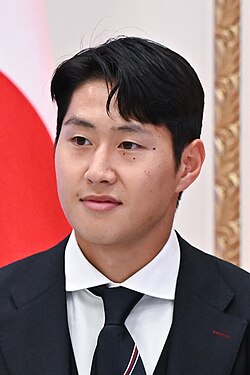
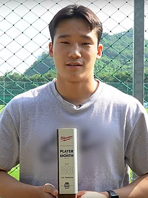

| Nombre |
Posición |
Edad |
Bibliografía |
Portada |
| Son Heung-min |
Delantero |
33 |
Estrella del Los Angeles FC y referente histórico de Corea del Sur. Reconocido por su velocidad, regate y capacidad goleadora. |
|
| Kim Min-jae |
Defensor central |
28 |
Jugador del Bayern Múnich, considerado uno de los defensores más sólidos de la selección y del fútbol mundial. |
|
| Hwang Hee-chan |
Delantero |
28 |
Delantero del Wolverhampton Wanderers, conocido por su rapidez y capacidad de finalizar jugadas importantes. |
|
| Lee Kang-in |
Centrocampista ofensivo |
24 |
Juega en el PSG, destaca por su creatividad, visión de juego y pases decisivos en el mediocampo. |
 |
| Kim Seung-gyu |
Portero |
33 |
Portero titular con experiencia internacional. Es reconocido por sus reflejos y seguridad bajo los tres palos. |
|
| Jo Hyeon-woo |
Portero |
33 |
Jugador del Ulsan Hyundai, clave en la defensa surcoreana, famoso por sus atajadas decisivas y liderazgo. |
|
| Lee Jae-sung |
Centrocampista |
27 |
Jugador del Mainz 05, aporta creatividad, control del juego y llegada al área rival. |
 |
| Kim Young-gwon |
Defensor central |
33 |
Con experiencia en la J1 League, es uno de los defensores veteranos y líderes de la selección surcoreana. |
|
| Hwang Ui-jo |
Delantero |
32 |
Jugador del Olympiacos, destaca por su capacidad goleadora y velocidad para atacar espacios. |
|
| Lee Tae-seok |
Defensor lateral |
23 |
Destaca por su velocidad, recuperación defensiva y apoyo constante en el ataque desde la banda. |
 |
| Paik Seung-ho |
Centrocampista |
28 |
Mediocampista de Jeonbuk Hyundai, contribuye al control del juego y distribución en el medio campo. |
|
| Bae Jun-ho |
Centrocampista ofensivo |
22 |
Jugador joven con proyección, destaca por su creatividad, pases y llegada al área rival. |
|